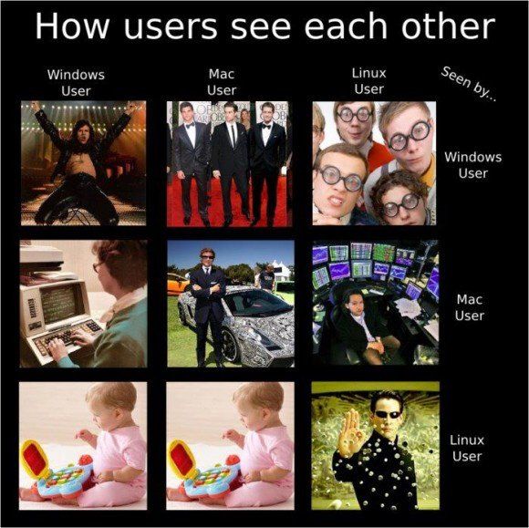
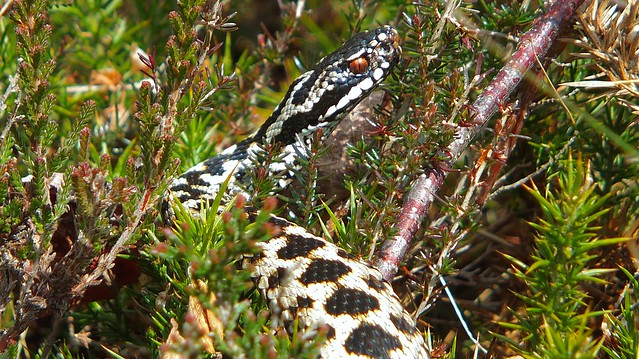
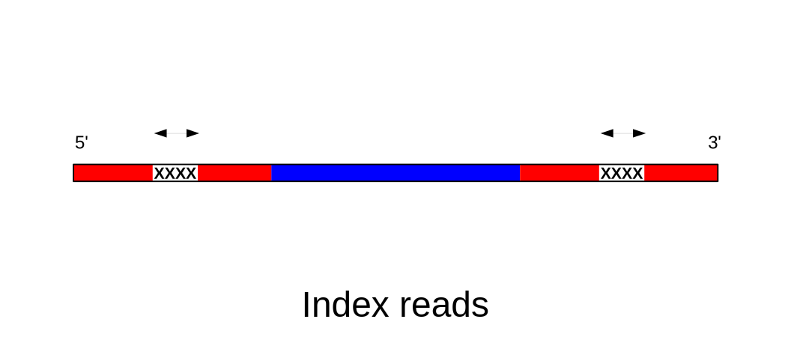

Bioinformatics Bootcamp 2024
Molecular Ecology and Evolution at Bangor (MEEB)
Dr Axel Barlow
email: a.barlow.@bangor.ac.uk
Schedule
| Date | Time | Activity |
|---|---|---|
| Tue 05/11/2024 | 10:00 to 16:00 | Unix-like systems, bash, SCWales, slurm |
| Wed 06/11/2024 | 10:00 to 16:00 | Illumina data, BEARCAVE, data processing |
| Thu 07/11/2024 | 10:00 to 16:00 | ANGSD, covariance and distance matrices, heterozygosity |
| Fri 08/11/2024 | 10:00 to 16:00 | Intro to R, PCA, NJ trees, Manhattan plots |
Prequisites
- a computer with internet connection
- an account on super-computing Wales
- basic knowledge of DNA and genome structure
Resources
Lecture slides
https://drabarlow.github.io/bioinformatics_bootcamp/
Bootcamp worksheet
https://drabarlow.github.io/bioinformatics_bootcamp/bootcamp_worksheet.html
Github repo
https://github.com/drabarlow/bioinformatics_bootcamp
Supercomputing Wales shared project
- please request access to: scw2141 Bioinformatics training
Introductions
Axel Barlow, Lecturer in Zoology at Bangor University
Interests
- Population and evolutionary genomics of animals. Palaeogenomics of extinct animals. Conservation genomics of native species
Bioinformatics experience
- Working in the field for ten years
- Entirely self taught post-PhD
- No proper bioinformatics/computer science background
- Knowledge of bash and R.
Unix-like systems and bash
Unix
- Operating system developed in 1969 by Bell Labs
- Unix philosophy: operating system should provide a set of simple tools, each of which performs a limited, well-defined function.
- Modular (small programs strung together)
- Inter-process communication: "pipes"
- Separate normal and "super" users (
sudo) - Hierarchical filesystem
- A shell for executing and combining tools
- The basis of many subsequent OS


Unix
Unix-like systems
Mac OS
- Released 1984
- Developed from NeXTSTEP, which is developed from Unix
- Proprietary, only available with Apple hardware
Linux
- 21 year old Linus Torvalds coded a Unix inspired OS in 1991
- Free and open source
- The core linux kernal available under many distributions: Ubuntu, Mint, Arch, RedHat, Android, Tesla, etc.

MS-DOS (Windows)
- Developed by Microsoft, released 1981
- Main OS for IBM PCs in 1980s
- GUI introduced with Windows, released 1985
- Largest market share (70% of PCs)
- Some bioinformatics possible (e.g.
Rtypically viaRstudio) - No
bash - Encoding of text files is different
- Majority of bioinfomatics software unsupported
- Windows subsystem for linux https://learn.microsoft.com/en-us/windows/wsl/install
- Seamless transfer between
DOSandUnixnot yet possible

OS comparison
| Windows | Mac | Linux | |
|---|---|---|---|
| standard PC functions | yes | yes | yes |
| cost | yes | yes | free |
| hardware choice | yes | no | yes |
| bioinformatics | no | yes | yes |
| HPC | no | no | yes |
| open source | no | no | yes |
| active community | no | no | yes |
| games | yes | no | no |
Terminal emulators and Bash
- a shell allows users to execute OS tools
- Accessed using a terminal
- Unix terminal came with the Bourne shell (
sh), developed by Steven Bourne in 1979 - In 1979 Brian Fox in improved version: the Bourne again shell (
bash) - Most Unix-like OS use
bashor something like it- execute standard OS functions and installed programs
- access filesystem
- supports bash scripts
- pipes, auto-completion, loops, wildcards, etc.


Supercomputing Wales and slurm
Supercomputing Wales
- £16m investment, part-funded by the European Regional Development Fund (ERDF) through Welsh Government
- Provide university research teams access to HPC
- Consortium of Cardiff, Swansea, Bangor and Aberystwyth
- 2 Supercomputers:
- Cardiff HPC System - Hawk
- Swansea HPC System - Sunbird
- Hawk: 280 nodes, 12,736 cores, 68.224 TB memory

Hawk
- Scientific linux OS
- compute nodes
- 134x Intel nodes with 20 cpus + 192 Gb RAM each
- 64x AMD nodes with 32 cpus + 256 Gb RAM each
- high memory nodes
- 26 nodes with 384 Gb RAM each
- GPU nodes
- 26 Nvidia P100 GPUs on 13 nodes
- 30 Nvidia V100 GPUs on 15 nodes
- Storage
- 1192TB (usable) scratch space
- 420TB of home directory space
Hawk users
- Anyone in consortium Universities
- Guests possible, with some restrictions
- Ability to set up shared projects
- Generally max 10 running jobs (ways around it)
- Three day max runtime (ways around it)
- Generally ~50 Gb home dir
- Generally 4 Tb scratch space (currently an issue)
- Uses
Slurmjob scheduler - Many programs installed as
modules - No super user access
- Can seek help from eResearch manager Ade Fewings (a.fewings@bangor.ac.uk)

Filesystem
/[root] is uppermost level of filesystem- Everything is contained in
/ - Directories exist within the filesystem, they can contain files and other directories
- We specify a path through this hierarchy using forward-slashes (note back-slashes on
DOS) - Our current directory is called the
working directory
/home/b.xlb21brx/
/scratch/b.xlb21brx/
- We can navigate through the filesystem (change working directory)
- Or we can specify the patch to directories or files remotely
Slurm
- Simple Linux Utility for Resource Management:
Slurm - Free open source job scheduler for linux systems
- Used on 60% of World's top 500 computers
- Assigns user jobs to computer resources
- Submit to queue
- Short, low-resource jobs move faster through the queue
- Other tools for scheduling, reporting, etc
Illumina data
Illumina sequencing platforms

Data output
| Platform | Million reads | Read length | Gb data | Genome coverage |
|---|---|---|---|---|
| MiniSeq | 25 | 2 x 150 bp | 7.5 | 2 |
| MiSeq | 25 | 2 x 300 bp | 15 | 4 |
| NextSeq | 400 | 2 x 150 bp | 120 | 33 |
| HiSeq X | 6000 | 2 x 150 bp | 1800 | 500 |
| NovaSeq | 20000 | 2 x 150 bp | 6000 | 1667 |
Sequencing by synthesis
- Sample preparation
- Bind DNA to flowcell, generate clusters
- Sequencing by synthesis
- Data analysis (in the machine)
Sample preparation

*Indexes allow multiple samples to be sequenced at the same time
Flow cell

Cluster generation

Sequencing by synthesis

Data analysis (in the machine)

What do we sequence?
[Not an exhaustive list]
- Whole genome sequencing (pure DNA sample from a single individual)
- Reduced representation genome data (RADseq, targeted SNPs, single individual)
- Poolseq (multiple individuals)
- Transcriptome (RNA sample from single tissue/individual)
- Metabarcoding (PCR amplicon, multiple individuals/species)
- Metagenomics (whole genomes, multiple individuals/species)
Whole genome sequencing
Short reads from a single individual can be mapped to a reference genome assembly

Whole genome sequencing

Illumina summary
- The current market leader
- Massive output
- Many applications (genome resequencing, RADseq, transcriptomes, metabarcoding)
- Cheap (£10 per Gb)
- Major limitation is the read length
BEARCAVE
BEARCAVE
- Nikolas Basler, Achim Klittich, Axel Barlow
- An environment for organising, processing, and archiving Illumina data
- BEARCAVE philosophy
- All users can access all data
- Avoid data redundancy
- All samples processed using identical software programs and parameters
- Incorporates sample metadata
- Documents results of data processing
- Easy to use wrapper scripts for programs
- Publicly available
- Safeguards in place to ensure consistency
- Consequently BEARCAVE is not for everyone, and has idiosyncrasies in use
Our project: adder population genomics
- Adders (Vipera berus berus) widespread across northern Eurasia
- Threatened or near-threatened in UK
- Illumina PE data from 27 individuals
- Plus one outgroup (Vipera berus bosniensis)
- 7 locations
- Our tasks
- Data format
- Adapter trimming and read merging
- Map to reference genome: chr7


Adder locations
| sample | locality |
|---|---|
| adder01-04 | Dublin |
| adder05-08 | Belfast |
| adder09-12 | Cork |
| adder13-16 | Limerick |
| adder17-20 | Galway |
| adder21-24 | Dundalk |
| adder25-27 | Bray |
| adder28 | outgroup |
Illumina data processing
.fastq file format
- fastq is the standard output format for data from Illumina (and other) platforms
@A00551:758:HKTVJDSX7:4:1101:3595:6872 1:N:0:CCTGAGATGT+GGTCTAGTTG
CTGAATATGGATTTTAATTGAATCCTAAGATATTATAGCATCTTTCACTCCCTGTCCTGTGCATGTCAGA
+
FFFFFFFFFFFFFFFFFFFFFFFFFFFFFFFFFFFFFFFFFFFFFFFFFFFFFFFFFFFFFFFFFFFFFF
- Line 1: info on sequencer, flowcell, cluster position, indexes (sometimes)
- Line 2: called bases
- Line 3: a +
- Line 4: quality scores on Phred scale
- 10 = 90% accuracy; 20 = 99% accuracy; 30 = 99.9% accuracy
- Recoded as single character: F = 37; ? = 30; 5 = 20; + = 10
Adapter trimming and read merging
DNA fragment length distribution
- DNA can be fragmented
- The fragment lengths have a distribution


45 ka cave bear (Ursus kudarensis)
Effect of insert size

Effect of insert size

Effect of insert size

Effect of insert size

Effect of insert size

Effect of insert size

Adapter trimming

Overlapping reads are merged

BEARCAVE script
- decompress fastqs
- trim adapter seqs using
Cutadapt- 30 bp min length
- min overlap 1 bp
- merge overlapping read pair using
FLASH - recompress files and clean up
- save appropriate log files
Expected output in /BEARCAVE2/trimdata/*processing/
- merged reads
*_mappable.fastq.gz[big file] - unmerged R1
*_mappable_R1.fastq.gz[big file] - unmerged R2
*_mappable_R2.fastq.gz[big file] - trim report
*_trim_report.logand merge report*_merge_report.log
Cutadapt
FLASH
Mapping
BEARCAVE mapping script
- decompress fastqs
- merged (SE) and PE data processed separately
- mapping using
bwamem algorithm - PCR duplicates identified and removed using
samtools - Reads with poor mapping quality (Q30) removed using
samtools
- mapping using
- SE and PE data merged
- mapping log file generated
- file cleanup and renaming
Expected output in /BEARCAVE2/mapped*/*processing/
- mapped filtered data
*.bam[big file] - bam index
*.bam.bai - mapping log
*_mapping.log
bwa
samtools (48,024 citations)
Population genomics using angsd
angsd
- Widely used program
- MANY population genetics analyses possible
- Tends to work directly from bam files (unlike
plink,admixtools, etc) - MANY filters available
- Genotype likelihood approach is a particular speciality
| Allele1 | Allele2 | prob11 | prob12 | prob22 |
|---|---|---|---|---|
| A | T | 0.05 | 0.9 | 0.05 |
- Several spin off programs that use GLs
NGSadmixPCangsdNGSrelaterealSFS
angsd website
angsd paper
Covariance matrix, distance matrix, heterozygosity
Covariance matrix
- All indviduals
- Allele frequency covariance matrix
- Used for PCA
Distance matrix
- All indviduals
- absolute genetic distance between populations
- used as input for NJ algorithm
Heterozygosity
- Your single adder
- Calculate GLs, ML estimation of SFS along a sliding window using
realSFS
Intro to R
What is R?
How R works
R advantages
R disadvantages
Rstudio
Tidyverse
Basic functionality
Objects
Functions
Data structures: vectors
Data structures: matrix
Data structures: dataframe
Data structures: list
Population genetics in R
Opinions on R from a heretic
PCA
Neighbour-joining clustering
Heterozygosity
That's all folks!
See you next year :)